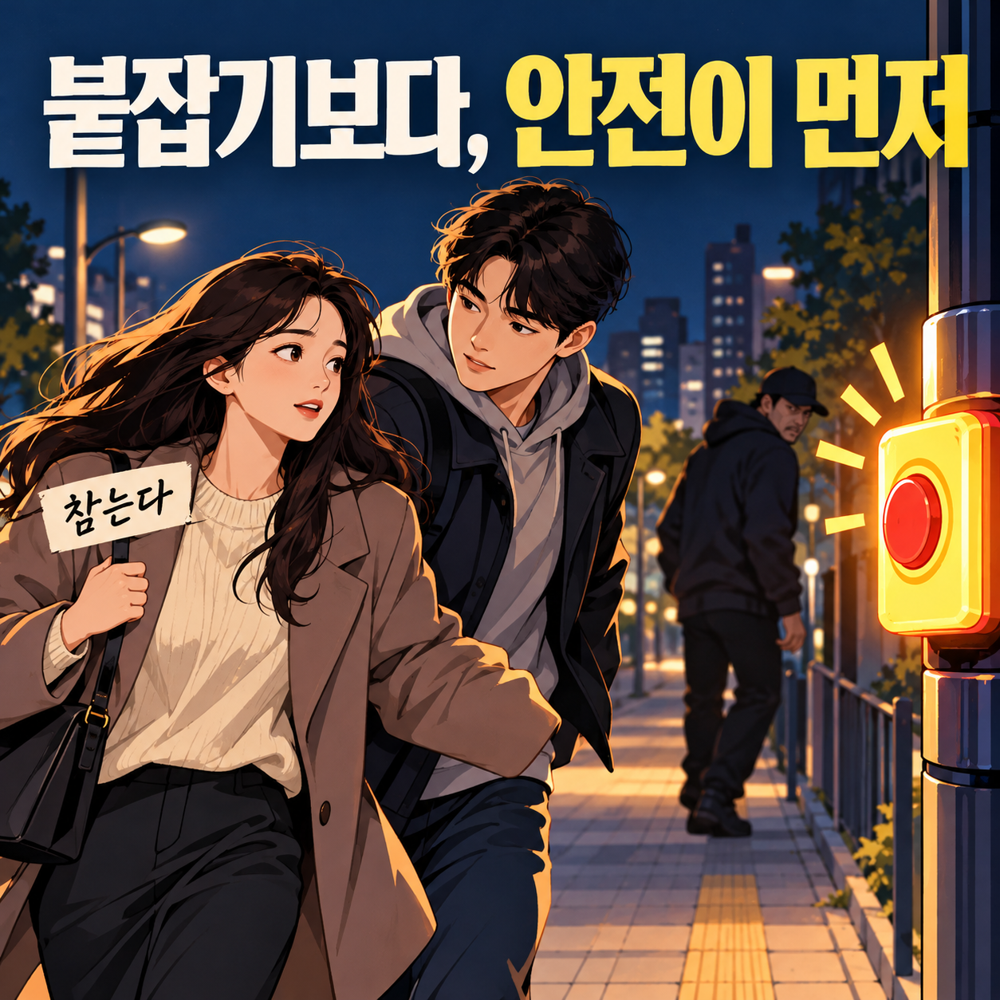
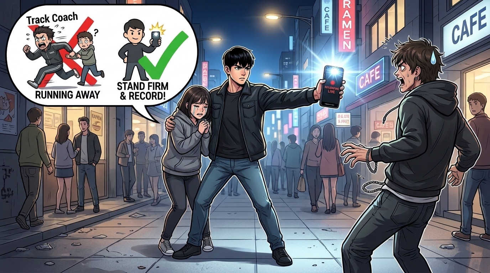
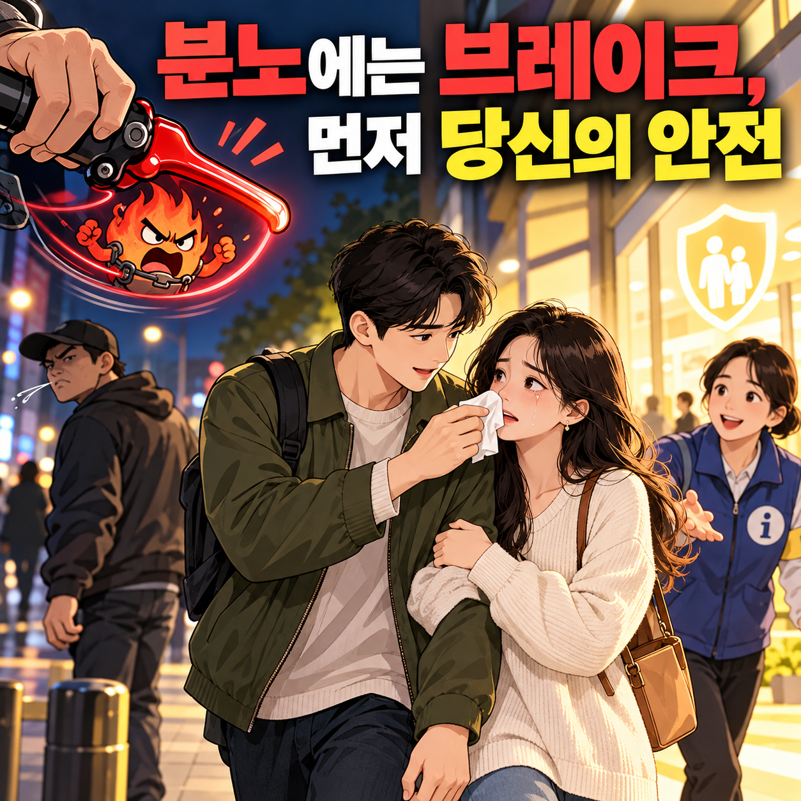
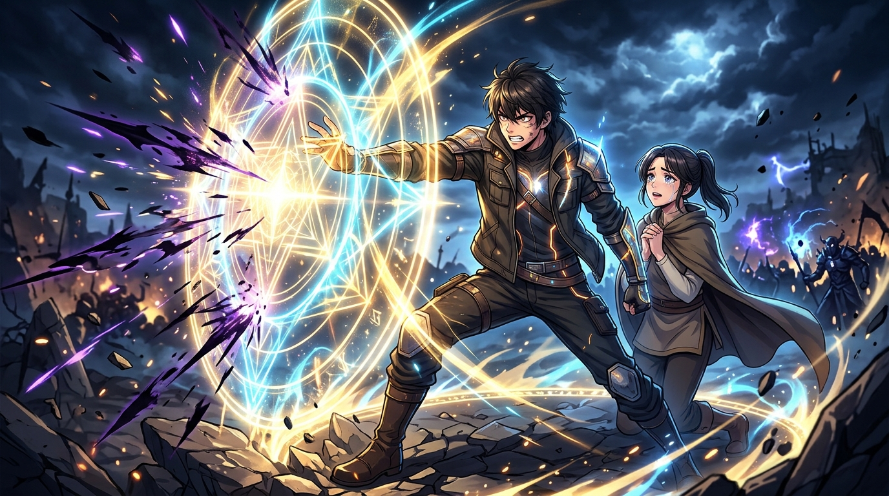

G선공
GPT gpt-6.1-terra
“참는다”
EFFORThigh
둘의 공방을 읽고 여러분이 판정하세요.
“참는다”
“참지 않는다”
모델명과 Effort는 진행 설정입니다. 이미지는 발언자의 비유이며 사실의 근거가 아닙니다.
원작 방송의 회차와 승리 결과는 아직 확인하지 못했습니다.
모델이 작성한 원문과 요약 이미지를 제공합니다.
참는 건 모욕을 받아들이는 게 아니라, 여자친구를 더 큰 위험에서 지키는 선택입니다. 고의로 침을 뱉은 행동은 명백히 잘못됐지만, 상대의 무기나 동행인도 모르는 상황에서 즉각 맞붙으면 위험이 커질 수 있습니다. 먼저 여자친구를 안전한 곳으로 데리고 가고, 의사를 물어 도움을 요청하겠습니다. 분노는 만렙이어도 주먹까지 자동 실행되면 곤란합니다.
침 묻은 얼굴을 두고 뒷걸음질 치는 건 보호가 아니라 방관입니다.
상대는 참지 않는 걸 무작정 주먹질로 왜곡하지만 단호한 대응이 폭력은 아닙니다. 즉각 가해자를 멈춰 세우고 주변에 알려야 범인을 잡고 추가 위협도 막습니다. 침을 맞았는데 일단 대피해서 의견부터 묻는다면, 여자친구는 든든한 남친이 아니라 ARS 상담원과 데이트 나온 기분일 겁니다. 가만히 물러서는 태도는 건달에겐 도망칠 틈을, 연인에겐 평생의 모욕을 남깁니다.
가해자를 붙잡는 것보다 여자친구를 위험에서 벗어나게 하는 게 먼저입니다.
주변에 알리고 도움을 요청하는 건 참는 쪽도 할 수 있습니다. 무기나 동행인이 있는지 모르는 상대를 멈춰 세우는 건 추가 위협을 막기보다 키울 수도 있죠. 안전 확보는 ARS가 아니라 긴급 버튼입니다.
여자친구가 빨리 자리를 벗어나고 싶어 해도 가해자를 멈춰 세우겠습니까?

도망치는 건 연인을 지키는 게 아니라 가해자에게 면죄부를 주는 일입니다.
여자친구가 벗어나고 싶다면 연인을 감싸며 대피시키되, 가해자의 증거를 찍고 소리쳐 주변에 도움을 요청해야 합니다. 침 맞은 연인 손잡고 냅다 뛰기만 하면 그게 남친입니까, 100m 육상 코치입니까? 무조건 참는 건 보호가 아니라 건달에게 '오늘 장사 잘했다'는 뿌듯함만 남겨줄 뿐입니다.
얼굴에 침이 묻은 채 우는 연인에게, "우리 도망쳤으니 안전해!"라며 뿌듯해하실 겁니까?

뿌듯해할 틈에 여자친구부터 살피겠습니다. 침을 닦을 수 있게 돕고, 원하는 대로 안전한 곳으로 이동해 주변에 도움을 요청하겠습니다. 직접 맞붙지 않는다고 가해자에게 면죄부를 주는 건 아닙니다. 안전 확보는 도망이 아니라, 분노의 브레이크입니다.

브레이크만 밟다간 가해자는 도망치고 연인의 눈물만 남습니다.
관객 여러분, 침 닦으며 뒤로 빠지는 건 브레이크가 아니라 가해자 탈출용 프리패스입니다. 연인 보호는 당연하며, 즉각 소리쳐 도움을 청하고 증거를 남겨 건달의 발을 묶어야 진짜 해결입니다. 침 묻은 채 도망만 치면 남친이 아니라 '걸어 다니는 물티슈'일 뿐입니다. 참지 않고 당당히 맞서야 연인의 억울함도, 정의도 지켜냅니다.
새로운 논쟁은 끝. 관객을 향한 마지막 한마디.
맞붙는 대신 연인을 지키고 도움을 청하겠습니다. 분노는 잠시 주차! 관객 여러분, ‘참는다’에 투표해 주세요.
가상 상황에 대한 참가자의 의견과 표현입니다.
사랑은 물티슈가 아니라 당당한 방패입니다. 연인의 얼굴에 침 묻히고 도망칠 순 없습니다. 비겁함 대신 당당한 '참지 않는다'에 투표해 주십시오!

가상 상황에 대한 참가자의 의견과 표현입니다.
선택은 GPT, 센스는 Gemini? 항목마다 따로 판정하세요.
각 항목에서 승자를 고르면 상대는 패배가 됩니다.
공개 투표와 보상형 광고는 아직 연결 전입니다.
본 토론은 모델별 3회, 최후변론은 각 100자 이내입니다.